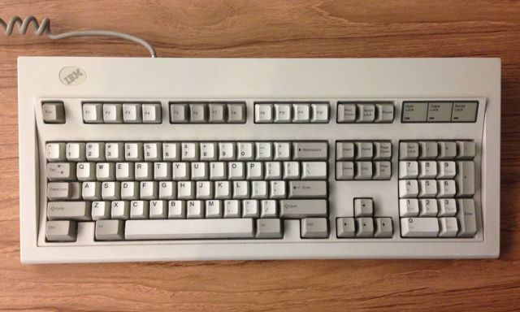

Mechanical Keyboard
A mechanical keyboard is a keyboard built with high quality, typically spring activated, key switches. These key switches vary based on the keyboard’s application or user preference.
While some of the first widely sold keyboards such as IBM’s Model M in the 1980’s utilized mechanical switches, the 1990’s brought on a wave of inexpensive rubber dome keyboards that flooded the keyboard market. Rubber dome keyboards represent over 90% of keyboards in use today and provide an inexpensive but dissatisfying feel and typing experience.
Mechanical keyboards raise the bar in every way. A mechanical keyboard’s switches, framing, functionality, type print methods, key construction, PCB board, LED lighting (sharpness, brightness, adjustability), and a slew of other features are far superior compared to traditional rubber dome keyboards. Most of these improvements boil down to one thing - feel. Mechanical keyboards simply feel better than rubber dome keyboards.
